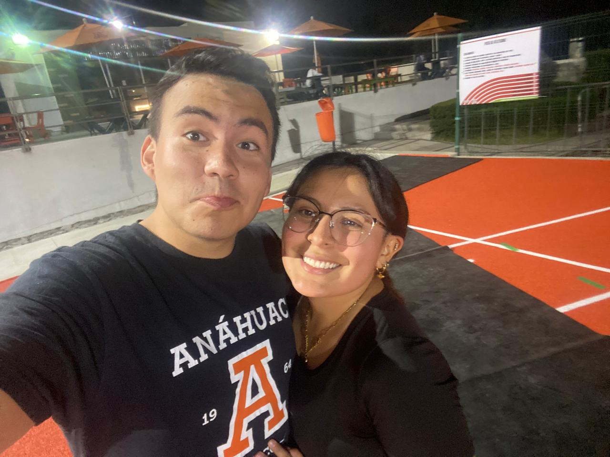
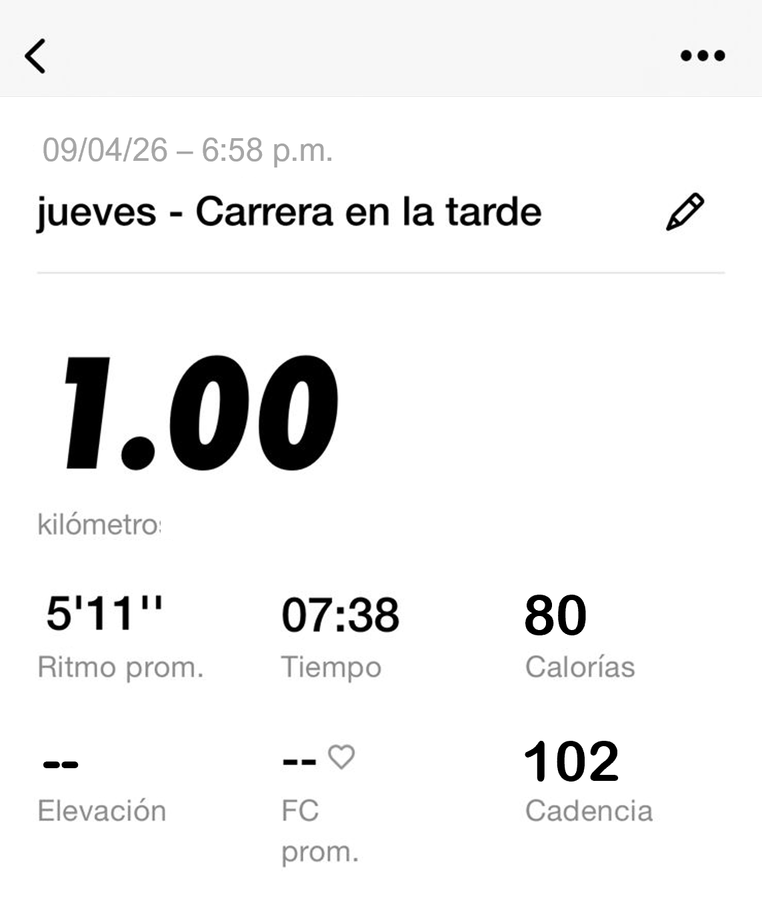
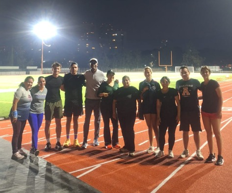
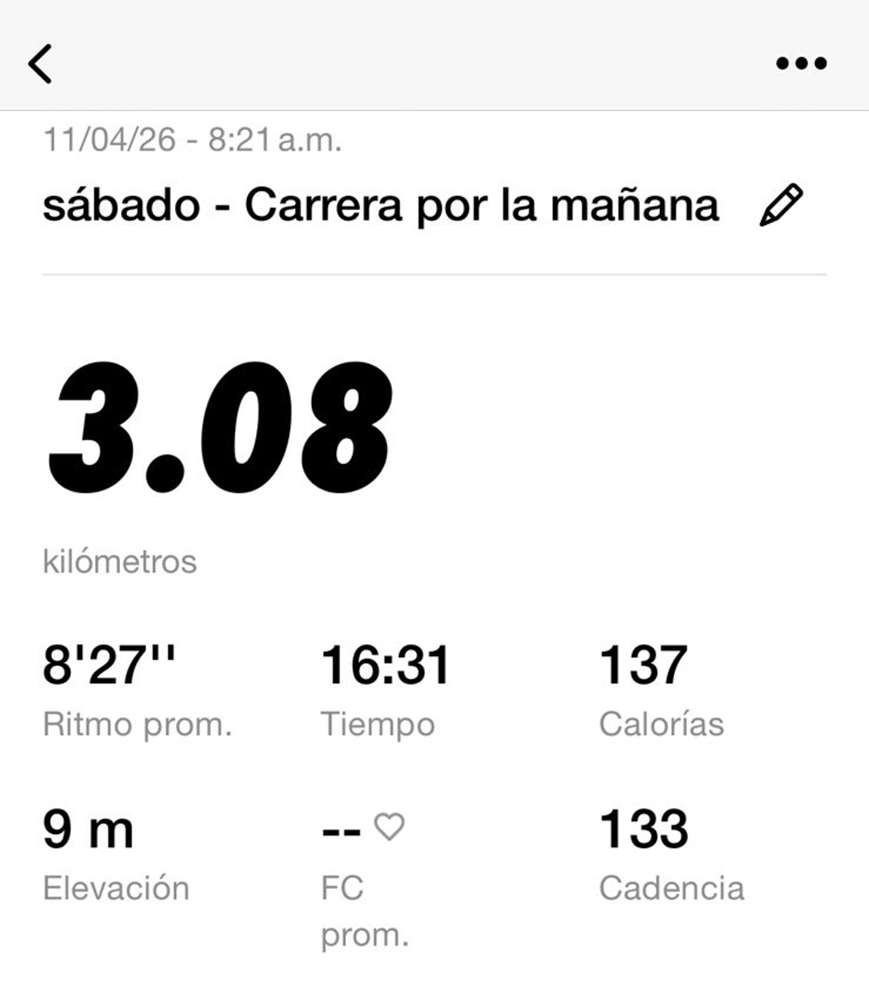
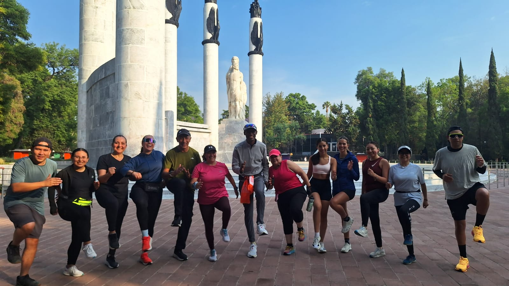
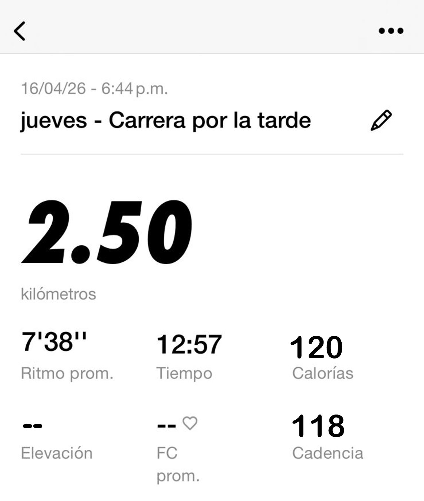
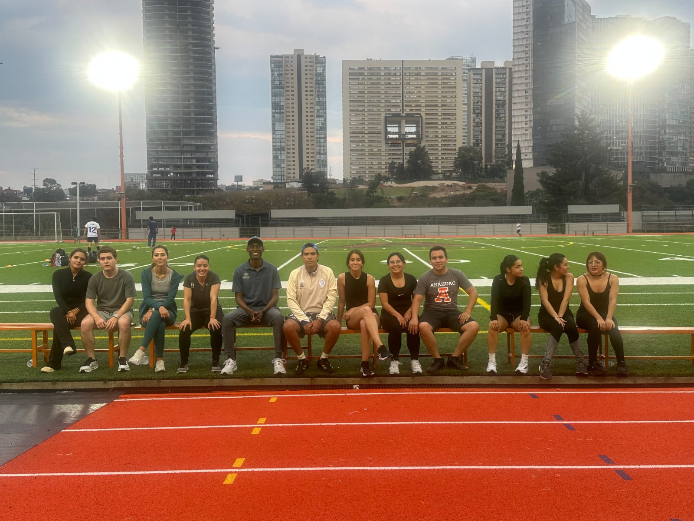
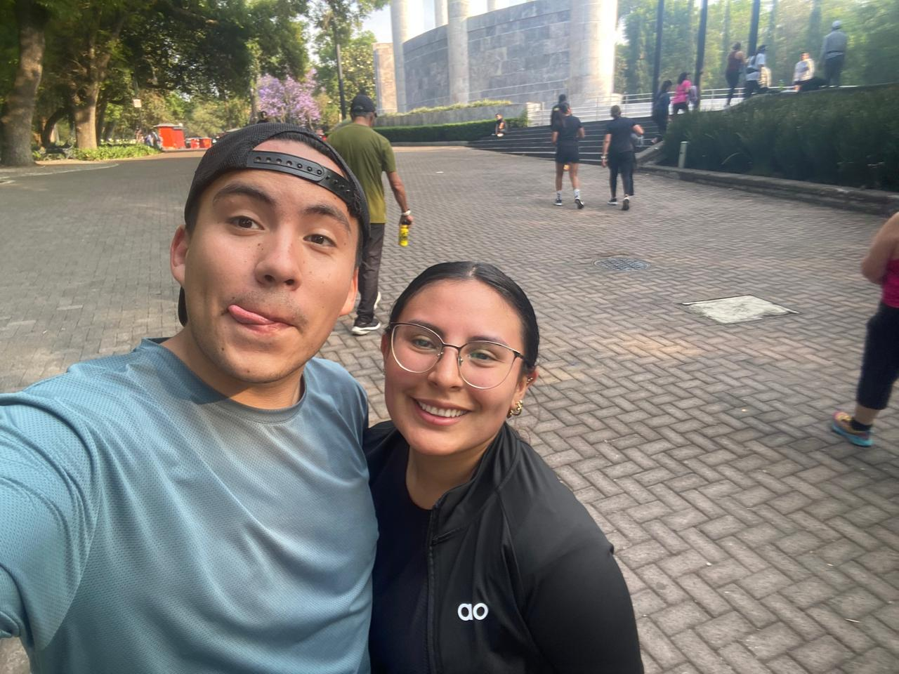

Se corre con el corazón, la mente y el alma.
▼ Comenzar el recorridoAntes de comenzar esta experiencia, mi relación con el running era puramente funcional. Correr era quemar calorías, mejorar el cardio, completar kilómetros.
Nunca había asociado el deporte con algo tan profundo como la espiritualidad. La palabra me parecía reservada para la meditación o la religión, no para zapatillas y asfalto.
Mis expectativas estaban marcadas por una resistencia interna: correr me pesaba porque mi mente siempre encontraba una razón para detenerme. Creía que no era para mí. Pero al ver a mi mamá cruzar la meta de un medio maratón, algo cambió; entendí que el límite no estaba en el cuerpo, sino en la forma en que me hablaba a mí mismo.
Entonces dejé de esperar que fuera fácil y empecé a buscar que fuera transformador, no solo al correr, sino al aprender a no rendirme ante mi propia mente.
"El deporte es un laboratorio del alma donde el ser humano se descubre a sí mismo."
— Francesc Torralba







ENTRENAMIENTO 1 → ENTRENAMIENTO 3
El límite físico apareció en los momentos de mayor fatiga: cuando las piernas ardían, la respiración se rompía y el cuerpo parecía pedir detenerse. Ahí entendí que el cuerpo no es un enemigo, sino un maestro que marca el ritmo y revela hasta dónde es posible llegar. En lugar de resistirme, aprendí a escucharlo, a sostener el esfuerzo sin forzarlo de más. Fue entonces cuando descubrí que muchas veces el límite no es el final, sino un umbral que, si se cruza con conciencia, expande lo que creía posible.
La mente muchas veces fue enemiga, sembrando dudas y empujándome a parar antes de tiempo. Pero al hacerme consciente de esa voz, dejé de creerle ciegamente y empecé a responderle. Así, poco a poco, se transformó en aliada: no porque dejara de cuestionarme, sino porque aprendí a no obedecerle siempre. Gestionar la frustración fue sostenerme en medio de ese ruido y elegir avanzar, incluso cuando mi mente insistía en lo contrario.
En medio del esfuerzo aparecieron momentos breves pero profundos de plenitud, donde todo lo externo dejó de importar y solo existía el movimiento. Ya no había prisa ni preocupación, solo una sensación de presencia total. En esos instantes, correr dejó de ser un esfuerzo y se volvió una experiencia de conexión, conmigo mismo y con algo más grande. Sentí gratitud, no por llegar a una meta, sino por el simple hecho de estar vivo, de poder moverme y sostenerme en ese momento.
Las capacidades que despertaron en el asfalto. Cada kilómetro fue también un kilómetro hacia adentro.
La capacidad de observarse a uno mismo desde afuera, como testigo del propio proceso interior.
Me di cuenta de mis pensamientos justo cuando quería parar antes de que el cuerpo lo pidiera. Ahí observé cómo mi mente se adelantaba al cansancio.
La habilidad de ir más allá de los propios límites y conectar con algo mayor que uno mismo.
Dejé de correr solo para mí en algunos momentos y sentí que formaba parte de algo más grande: mi mamá, otros corredores, una historia compartida.
Transformar el dolor o el cansancio en fuente de sentido y crecimiento, no solo en obstáculo.
El cansancio dejó de ser solo dolor y se volvió señal de esfuerzo. Me mostró que podía resistir más de lo que creía.
Dejar de estar centrado en el rendimiento y el juicio propio para simplemente ser y estar.
Solté el ritmo y la comparación. Solo corrí, sin pensar en rendimiento ni en los demás.
La habilidad de maravillarse ante lo ordinario: el propio cuerpo, el entorno, el movimiento.
Me sorprendió mi respiración encontrando orden y el amanecer mientras corría. Vi belleza en el esfuerzo.
La pregunta viva por el "¿para qué?" que aparece cuando el cuerpo ya no da más.
En lo más difícil apareció el “¿por qué sigo?”. La respuesta fue simple: porque aún no es el momento de parar.
Correr activó cuerpo, mente y algo más profundo al mismo tiempo. En el segundo entrenamiento, mientras el cuerpo dolía y la respiración se desordenaba, la mente quería parar, pero emocionalmente sentía la necesidad de seguir. Todo ocurrió a la vez, sin separación clara.
En los momentos en que el cansancio se volvía casi insoportable, apareció la pregunta de por qué sigo haciendo esto. No fue solo físico, fue existencial: cuestioné mi capacidad de sostener procesos difíciles en general, no solo corriendo.
El cansancio me mostró que muchas veces me detengo antes de llegar a mi verdadero límite. Reveló una tendencia a evitar el malestar, incluso cuando todavía podía continuar.
Correr me mostró que soy más persistente de lo que creo, pero también más mentalmente frágil de lo que acepto. Descubrí que mi mayor lucha no es física, sino interna.
Hubo un momento en que dejar de mirar el ritmo y la distancia hizo que el resultado perdiera importancia. Entendí que lo valioso era simplemente sostenerme en el proceso, no la marca final.
Lo aprendido se refleja en la vida académica y personal, especialmente cuando algo se vuelve difícil y aparece la tentación de abandonar. Ahora reconozco mejor ese límite y puedo quedarme un poco más, incluso cuando incomoda.
Correr dejó de ser una actividad con medida y se convirtió en una forma de exposición. Ya no es solo el recorrido de una distancia, sino el encuentro repetido con lo que soy cuando el cuerpo deja de obedecer con facilidad. En ese espacio sin adornos, sin interrupciones, aparece una versión de uno mismo que no siempre se ve en la vida cotidiana: más honesta, más vulnerable, menos narrativa.
El esfuerzo antes lo entendía como algo que debía ser vencido o administrado; ahora lo he vuelto a reconocer como algo que no siempre se supera, ni siempre se controla. A veces solo se sostiene. Y en ese sostener aparece una forma distinta de disciplina: no la que fuerza, sino la que permanece.
El deporte, después de esta experiencia, volvió a dejar ese lugar secundario. Se volvió un territorio de observación interior. No porque me entregue respuestas definitivas, sino porque me obliga a permanecer en las preguntas mientras el cuerpo avanza. Así, correr no me ordena ni me transforma de manera espectacular; me despoja. Y en ese despojo, algo se vuelve más claro: la manera en que uno atraviesa el esfuerzo, para mi, dice más que el resultado del esfuerzo mismo.

No se corre solo con las piernas. Se corre con todo lo que uno es.